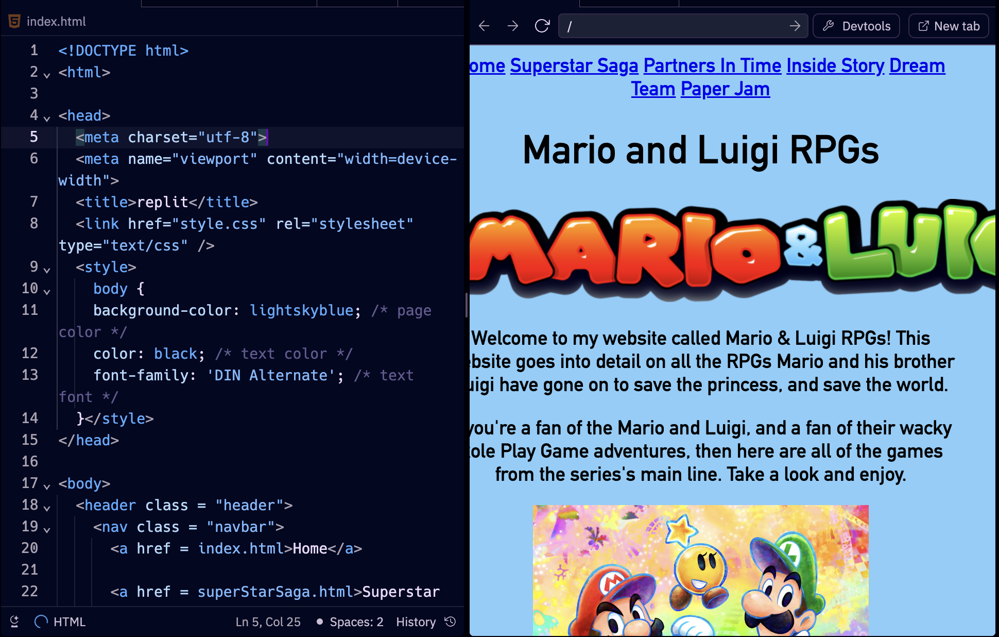
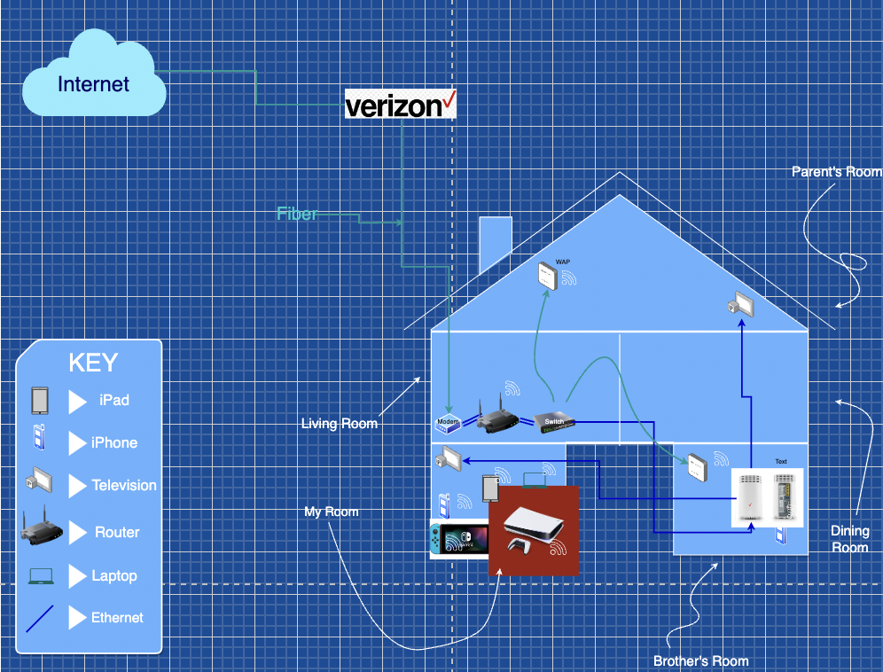
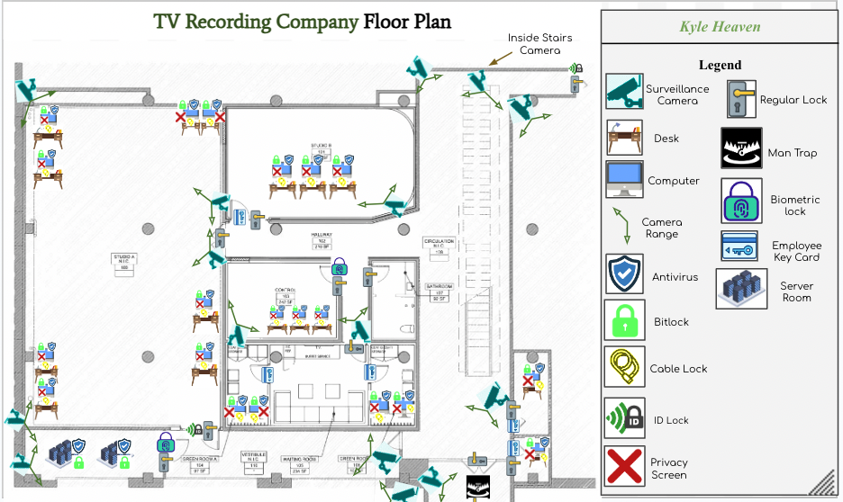

These are a few of the projects i've worked on during my time at the STEAM center.
They are mainly a mix of Programming, along with CyberSecurity.

This was mt fisrt project during my time at the STEAM Center. This project was based off of our
Web Design Unit, where we learned how to code in
Python, and
HTML. We also learned how HTML is the coding language, along with
CSS, to make these websites, including the one you're currently reading.

This was my third project during my time at the STEAM Center. This project was bsed off of our
Networking Unit, where went over the different types of networks such as
PAN, MAN, WAN, WLAN, and CAN.

This was the fourth project during my time at the STEAM Center. This was during our
Security Unit, where we went over
Physical and Digital Security.